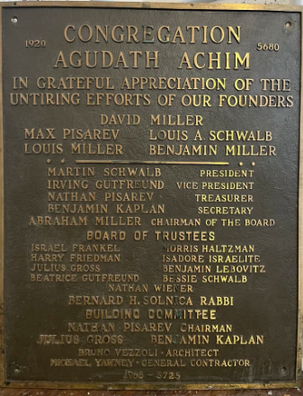
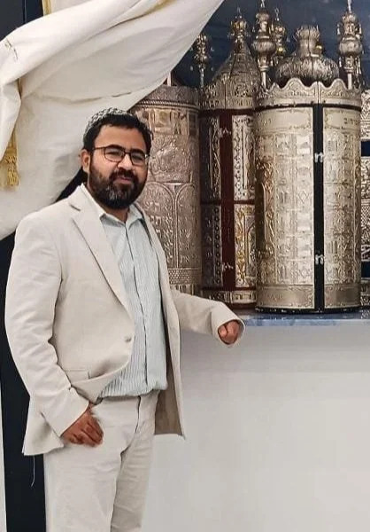
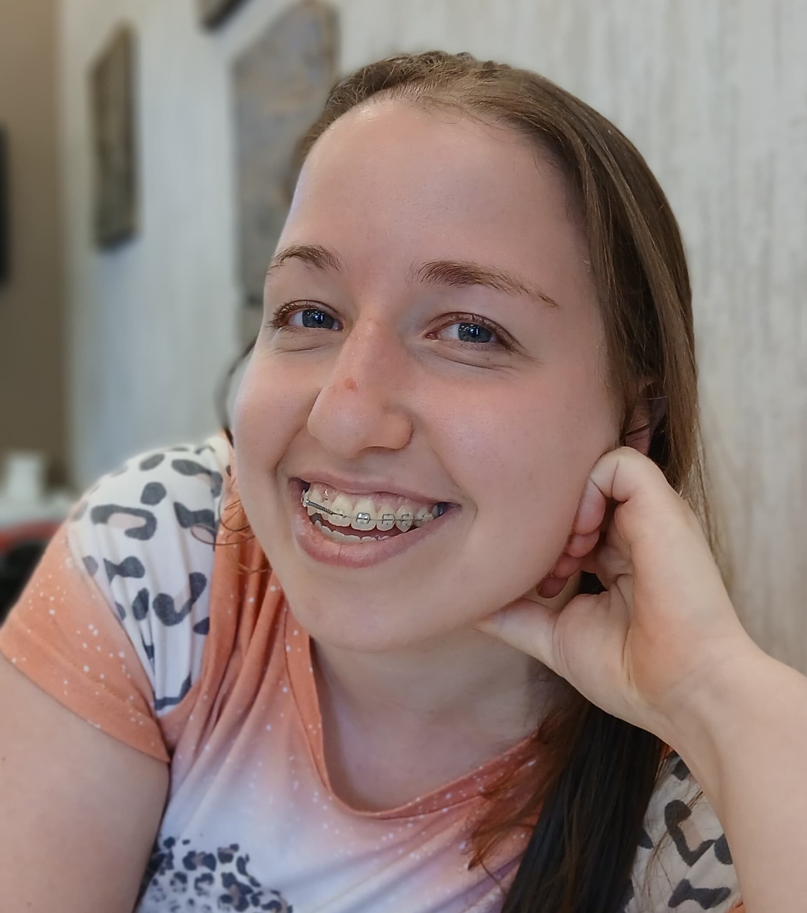

Rabbi Yitzchok Yagod
Head Rabbi and President
 OUR STORY
OUR STORY
Beth Avraham is a Modern Orthodox synagogue that blends meaningful, traditional services with a warm, easygoing, small-town atmosphere. Our community brings together Ashkenazi and Sephardi minhagim, and our congregants come from all over the world—creating a synagogue that feels both rooted and refreshingly open.


Beth Avraham began in late 1920 as Congregation Agudath Achim, meeting in the back of David Miller’s furniture store. Officially incorporated in 1921, it became the only Orthodox synagogue serving South Side Bethlehem for 45 years, first on Webster Street and later in Edgeboro, where the building still features its original woodwork.
In the 1970s, as Bethlehem Steel declined, the congregation struggled. By 1977 the synagogue no longer had a rabbi and remained largely inactive for nearly two decades, with plans eventually made to dissolve the congregation.
In 2003, the community was revived when its first rabbi in 25 years was hired. By Passover 2004, a new generation of families and young people had joined, and the synagogue was renamed Beth Avraham in honor of its first rabbi, Rabbi Avraham Mowitz.
Today, Beth Avraham is located near the Delaware River in Easton, Pennsylvania, and is led by Rabbi Yitzchok Yagod.
MEET OUR TEAM




 SUPPORT BETH AVRAHAM
SUPPORT BETH AVRAHAM
From daily tefillah to holiday celebrations, your generosity keeps our synagogue active and welcoming year-round.